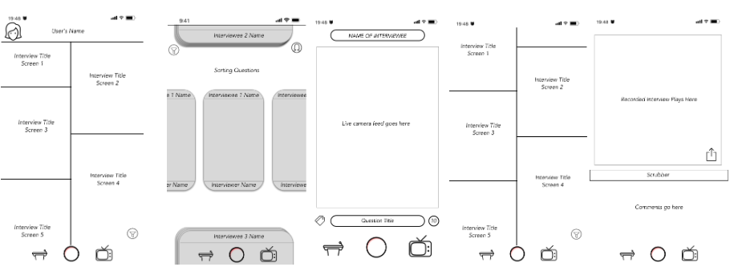
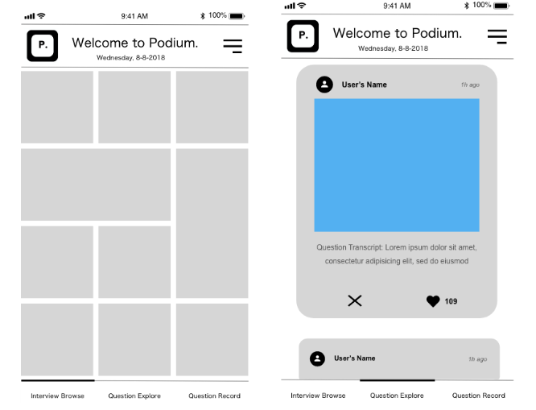
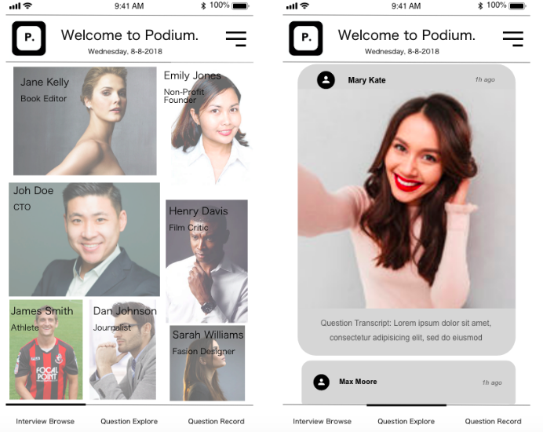
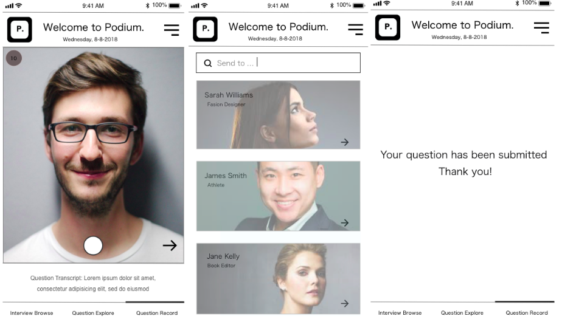

Podium
Idea
Podium is an application I am helping a friend design and build -- so far it is in the very early stages of design. The idea of the app is to be a mobile platform for virtual town halls, connecting people to figures that they care about and want to hear from in an interactive way.
Wireframes
The initial wireframes (done in Sketch) looked like this:
Initial Design
Thinking about the way users interact with applications, some preliminary design decisions I made were: to maintain the card component (as it is an intuitive and popular way to organize and sift through data) but make it a swiping system instead of scrolling, create a global theme in terms of typography and colors (my plan is to make the application black and white to maintain the sanctity and seriousness of a news app, with some splashes of color in images to put a more fun and social media-esque spin on it), have a consistent top bar across pages (to tie the application together), and use words on the bottom instead of icons (for easier understanding and formatting). I decided to first focus on two of the components: the main screen listing interviewees, and the card component where users sift through questions. This initial prototype was done using AdobeXD:
I cleaned these up a bit and incorporated photos, to bring it closer to what it would look like in reality. Also, after receiving some feedback, made some changes to the card design: getting rid of the ‘x’ and '<3' (as they are superfluous), and making the card longer and setting the image to take up more space, in order to make it more immersive:
The next feature I worked on was the Question Record section, focusing on how to make recording totally immersive, easy to search and send a user’s recording, and providing feedback that is was successful:
Here it is all together in an interactive prototype:
Next Steps
This is a very initial-stages design. Some feedback I received to consider for my next design iteration is: to flip the order of the screens (to Explore, Record, Browse instead of the current Browse, Explore, Record), make each card stack have a main title of the interview category and each individual card to have the individual question title, and think about a different and more detailed way to present feedback. Some other things I think are good to keep in mind as the application scales up is: incorporate a calendar feature for scheduled interviews, develop a newsfeed for personalization, organize the Browse screen better when there will be a high volume of people (organize by category?), implement the pages for when an interviewee is clicked from the Browse screen. Our plan for next steps is to bring this idea and design to a Hackathon and implement the initial proof of concept! From there, we will come across more design insights, new ideas, and can start usability testing.